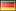

Quake Nations Cup: Teams and predictions

Quake Nations Cup is about to begin and here is a list of the signed teams for the QuakeWorld section along with some short predictions on the outcome.
Update:  Denmark and
Denmark and  Russia B added.
Russia B added.
Teams
Czech
JohnNy_cz, Flamer, itmik, shpeq, jebak, Fr4g, moris, cuky

Germanyanni, 123, spoink, raptor, uig, iba, mae, Soma
Austria
Defcon 5, slash, hoshi, watzl, ori
 Russia
Russia
A: xpr, starling, zepp, dot, doom, blaze, gor, unknown
B: VVD, bubliG, SS[3b]
 Hungary
Hungary
zero, milamber, orion, crash, stevens
 Netherlands
Netherlands
purity, reppie, murdoc, dragon, skillah, mja
 Sweden
Sweden
XantoM, bps, riker, nabbe, lakso, phrenic, molecule, razor
 Poland
Poland
cpe, billy, blasp, derek, insane, panczo, plast, slabi
United Kingdom
batfink, ser, marvelforce, keys
 Finland
Finland
anza, fifi, fix, milton, blaze, mirage, skisso, ihminen, diki
 Denmark
Denmark
Zalon, ParadokS, nEmo, eMbAh, Shadow, pwr
Predictions
First of all, I predict that this tournament will become very interesting and I am as exited for the games I am about to play myself as for spectating the other games.
Outcome
I’m pretty sure that  Finland,
Finland,  Sweden and
Sweden and  Netherlands will be fighting for the top spots. These three teams have lineups that should be able to win against the other nations without too much of a hassle.
Netherlands will be fighting for the top spots. These three teams have lineups that should be able to win against the other nations without too much of a hassle.
For the rest of the teams, I think that  Russia A looks strongest and will take the 4th place. Other than that, i’m not sure at all and will probably lose all my Goldrush cash during those games.
Russia A looks strongest and will take the 4th place. Other than that, i’m not sure at all and will probably lose all my Goldrush cash during those games.
Strongest lineups
The lineups I think would be the best choice for each nation, ordered by the strongest lineup.
 Finland: fifi, fix, milton, blaze
Finland: fifi, fix, milton, blaze Sweden: XantoM, razor, riker, nabbe
Sweden: XantoM, razor, riker, nabbe Netherlands: purity, reppie, murdoc, dragon
Netherlands: purity, reppie, murdoc, dragon Russia A: xpr, doom, blaze, gor
Russia A: xpr, doom, blaze, gor Poland: cpe, billy, insane, blasp/derek/panczo/plast/slabi*
Poland: cpe, billy, insane, blasp/derek/panczo/plast/slabi*- United Kingdom: batfink, ser, marvelforce, keys
- Germany: spoink, Soma, 123, uig
 Denmark: Zalon, ParadokS, nEmo/eMbAh/Shadow/pwr*
Denmark: Zalon, ParadokS, nEmo/eMbAh/Shadow/pwr* Hungary: zero, milamber/orion/crash/stevens*
Hungary: zero, milamber/orion/crash/stevens*- Czech: JohnNy_cz, Flamer, moris, itmik/shpeq/jebak/Fr4g/cuky*
- Russia B: VVD, bubliG, SS[3b]
- Austria: Defcon 5, slash/hoshi/watzl/ori*
* Don’t know which of the players who is the best.
.. or am I totally wrong? You tell me!
Btw: If you know when you are playing a game, please tell us in #qwdrama or add it to QW Schedule and it will be open for bets at Goldrush asap.
Denmark is signing up today too :D